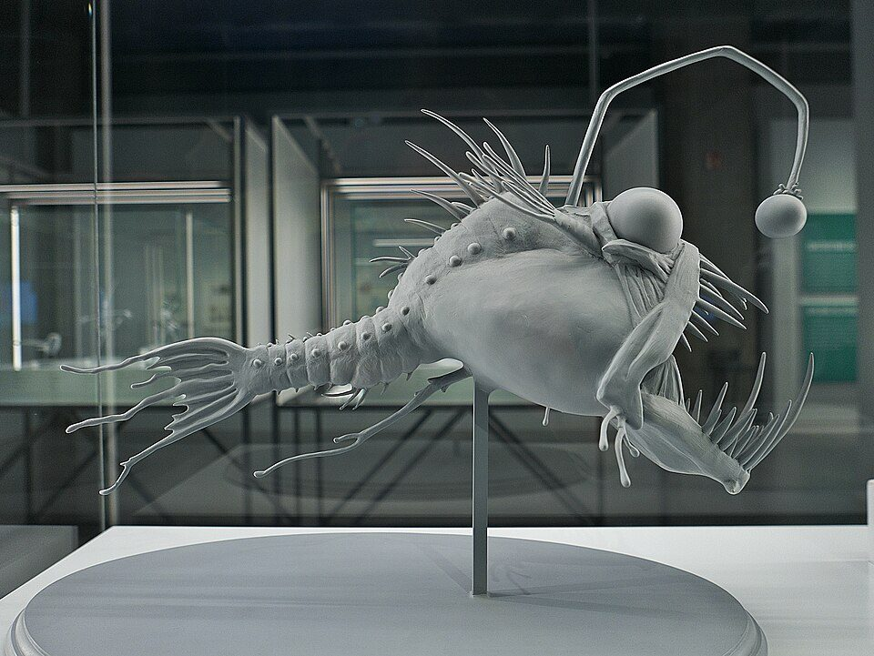

La vida en las profundidades
Oscuridad total, frío y presiones aplastantes: aun así, el fondo del mar está lleno de criaturas que fabrican su propia luz.


Por debajo de los 200 metros de profundidad, la luz del Sol apenas llega; por debajo de los 1.000 metros, la oscuridad es total. El agua está a 2-4 °C y la presión aumenta una atmósfera cada 10 metros. Durante siglos se pensó que allí abajo no podía haber vida. Hoy sabemos que las profundidades forman el mayor hábitat del planeta.
Las capas del océano
| Zona | Profundidad | Cómo es |
|---|---|---|
| Iluminada | 0 a 200 m | Hay luz para la fotosíntesis; aquí vive la mayor parte de la vida marina |
| Crepuscular | 200 a 1.000 m | Penumbra azulada; animales que suben a comer de noche |
| De medianoche | 1.000 a 4.000 m | Oscuridad total; solo la luz que producen los propios animales |
| Abisal | 4.000 a 6.000 m | Las grandes llanuras del fondo oceánico |
| Hadal | Más de 6.000 m | Las fosas, como la de las Marianas |
Luces en la oscuridad
Alrededor de tres cuartas partes de los animales de las profundidades producen su propia luz: es la bioluminiscencia. La usan para atraer presas, confundir a los depredadores, camuflarse o encontrar pareja. El rape abisal lleva sobre la cabeza una especie de caña de pescar con una luz en la punta, en la que viven bacterias luminosas. En algunas especies, el macho, mucho más pequeño, se fusiona para siempre con el cuerpo de la hembra.
Cada noche, miles de millones de peces, calamares y crustáceos suben desde la zona crepuscular hasta la superficie para comer y bajan de nuevo al amanecer. Es la mayor migración diaria del planeta.
Oasis sin sol
En 1977, el submarino Alvin exploraba una dorsal oceánica cerca de las islas Galápagos, a 2.500 metros, cuando sus tripulantes encontraron algo que nadie esperaba: chimeneas que expulsaban agua a más de 350 °C, rodeadas de gusanos de tubo de más de dos metros, almejas gigantes y cangrejos blancos. Eran las fuentes hidrotermales.


Allí la vida no depende del Sol. Unas bacterias obtienen energía de los compuestos químicos del agua caliente, como el sulfuro de hidrógeno, mediante la quimiosíntesis, y alimentan a todo el ecosistema. Muchos científicos piensan que la vida en la Tierra pudo empezar en lugares como estos, y por eso se buscan océanos parecidos en lunas como Europa o Encélado.
Gigantes y rarezas
- El calamar gigante, de hasta 12 metros, fue durante siglos una leyenda de marineros, el kraken. No se fotografió vivo en su hábitat hasta 2004 ni se grabó en vídeo hasta 2012.
- El calamar colosal de la Antártida es aún más pesado y tiene los ojos más grandes del reino animal, del tamaño de un balón.
- El pez gota, famoso por parecer una masa triste y gelatinosa, tiene en realidad un aspecto normal a 1.000 metros: se deforma al sacarlo, cuando le falta la presión.
- En 2022 se filmó un pez caracol a 8.336 metros, el pez más profundo jamás observado.
Vídeos para entenderlo mejor
- ¿Qué se oculta en el lugar más solitario de la Tierra? La zona abisal.En Pocas Palabras – Kurzgesagt · 4,4 M visualizaciones
- El rape de profundidad | NATIONAL GEOGRAPHIC ESPAÑANational Geographic España · 865 mil visualizaciones
Los vídeos son de YouTube y de sus autores. Se cargan solo al pulsar sobre ellos. Ver todos los vídeos →